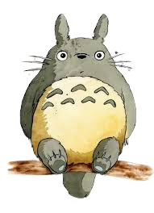

1988 My neighbor Totoro
My Neighbor Totoro is a beloved animated film directed by Hayao Miyazaki and produced by Studio Ghibli, released in 1988. The story is set in rural Japan and follows two young sisters, Satsuki and Mei, who move to the countryside with their father to be closer to their ailing mother.
